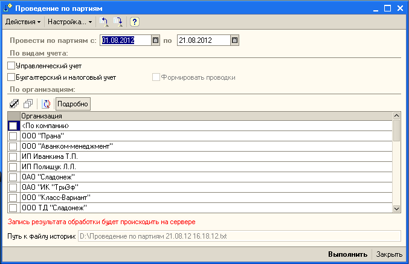
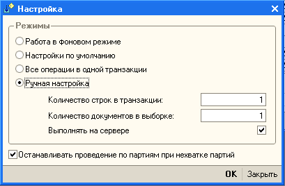
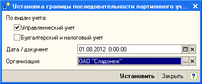

Обработка и инструкции:
\\Servsh\shared\Отчеты и обработки 1С\Отдел отгрузки\Проведение реализаций\
Обязательно установить галочку "Останавливать провед......." см. рис. 2
Обзятельно проверить и настроить последовательность см. рис. 3 (дату определяет бух.)


